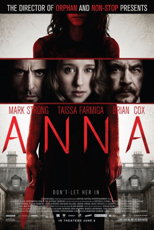

#3595 Mindscape
Alternativ: Anna (Originaltitel)
 
 IMDB-Wertung: 6.5 / 10
IMDB-Wertung: 6.5 / 10  Metascore: 0
Metascore: 0 
Detektiv John Washington kann in die Erinnerungen anderer Leute eintauchen, um Traumata zu untersuchen oder ihnen zu helfen, sich an Details zu erinnern, die zur Aufklärung von Verbrechen wichtig sind. Was als kleinerer Fall beginnt, entwickelt sich zu seinem schwierigsten Job: John soll herausfinden, ob die brillante, aber gefährliche Problem-Teenagerin Anna eine Soziopathin oder nur ein Trauma-Opfer ist. Als er in ihren Geist eindringt, um der Sache auf den Grund zu gehen, überlappen sich verschiedene Erinnerungen. Ist Anna wirklich so unschuldig, wie es scheint? Jedenfalls erweist sie sich als unerwartet harte Nuss - und als eine der berechnendsten und manipulativsten Personen, der John in seiner Karriere je begegnet ist. Das Problem: Er hat selbst mit unbewältigten Traumata zu kämpfen, und langsam beschleicht ihn der Verdacht, dass Anna ihm falsche Erinnerungen vorsetzt...
Jahr: 2013
Dauer: 98 Minuten
FSK: 16
Land: Spanien Studio: StudioCanalTonspuren: DTS - ,
Untertitel: Deutsch,
Auflösung: 1080p (1920x808) Größe: 9820 MB
Genre: Thriller, Drama, Mystery
Regisseur: Jorge Dorado
Drehbuch: H.A.L. Craig
Soundtrack:
Darsteller:
 Mark Strong als John Washington
Mark Strong als John Washington Saskia Reeves als Michelle Greene
Saskia Reeves als Michelle Greene Richard Dillane als Robert
Richard Dillane als Robert Indira Varma als Judith Morrow
Indira Varma als Judith Morrow Noah Taylor als Peter Lundgren
Noah Taylor als Peter Lundgren Alberto Ammann als Tom Ortega
Alberto Ammann als Tom Ortega Brian Cox als Sebastian
Brian Cox als Sebastian- Frida Palsson als Anna Washington
- David Chevers als Detective
 Bruno Sevilla als Detective 2
Bruno Sevilla als Detective 2 Taissa Farmiga als Anna Greene
Taissa Farmiga als Anna Greene- Sanny van Heteren als Samantha Harris
 Julio Perillán als Senator Rockford
Julio Perillán als Senator Rockford- Molly Malcolm als Maid
- Clare Calbraith als Jaime Feld
- Antonia Clarke als Susan Merrick
 Jessica Barden als Mousey
Jessica Barden als Mousey- Rod Hallett als Detective Worner
 Hovik Keuchkerian als Bartender
Hovik Keuchkerian als Bartender- Sophie O. als Drunk Woman
- Molly Stein als Daniela Hooper
- Marc Padró als Intruder
- Aisha Prigann als Marjorie
- Simon Cohen als Ralph
- Eliza Bateman als 5 Year Old Anna
- Julie Nash als Housemother
- Irene Pereira Moral als Susan Merrick's Friend 1
- Cadhla Kennedy als Susan Merrick's Friend 2
- Ianthe Schnitzler als Sebastian Niece
- Harris Gordon als Police Officer
- Rob Bateman als Prison Guard
- Shirley Roper als Flower Shop Lady
- Minnie Marx als Mrs. Ortega
Datei: X:\2013(I-M)\Mindscape (2013, FSK16, 1920x808).mkv seit 07.05.2016
Festplatte: HD 2013(I-Z)-2014(A-Z)
 Es gibt insgesamt 89 Filme in der Gruppe '2013(I-M)'
Es gibt insgesamt 89 Filme in der Gruppe '2013(I-M)'